Side event · Pré Blockchain.RioComo empresas brasileiras estão colocando IA em produção — com cultura, método e infraestrutura própria.
8.000+ membros na comunidade — e times inteiros formados dentro de empresas.
IBOPE · Klini Saúde · Hospital Casa · Monte Dourado · Eatopia — diagnóstico, formação e automação.
Membro NVIDIA Inception · Parceiro oficial AWS.
Ariel Alexandre · Bruno Pessoa · Caio Vicentino · Deco Montenegro — co-fundadores.
Reportagem na Época Negócios (2025).
Educação fazendo, não assistindo: cada encontro termina com algo funcionando no dado da empresa.
Chamamos de micro-SaaS interno: ferramentas sob medida, construídas pela própria área, para o próprio processo — em dias, não em ciclos de RFP.
"Vibe coding" — descrever o que se quer e deixar a IA escrever o código — foi cunhado por Andrej Karpathy (OpenAI/Tesla) e eleito palavra do ano de 2025 pelo dicionário Collins. Na Replit, 75% dos clientes nunca escrevem uma linha de código.
98% das médias e grandes empresas brasileiras têm dificuldade para contratar os profissionais de tecnologia que procuram (Ford/Datafolha, 2026). Quem já conhece a operação vira operador de IA.
Nos nossos programas, quem constrói é a própria área — com método, acompanhamento e governança. Não é promessa: é o formato de cada encontro.
O IBOPE opera um programa AI-First com a Cultura Builder: encontros contínuos em que executivos aprendem IA usando IA — com automação de assistência executiva já em uso no dia a dia.
AI-First em operação — educação fazendo, no ritmo da liderança.
26 anos de dados proprietários de medição de audiência no roadmap para virar produto de IA.
"O moat não é o modelo — é o dado."
Klini Saúde — uma operadora de saúde onde a própria operação constrói suas micro-soluções internas, área por área, a partir de um diagnóstico estruturado.
Operadora de saúde — dado sensível por definição.
Diagnóstico área por área → trilha própria → a operação constrói.
O time da Klini conta a história — do mapa de dores às ferramentas internas construídas por quem vive o processo.
Maturidade e dores área por área, com os gestores. Saída: quick wins priorizados e um roadmap de 90 dias.
Não é curso de prateleira: a trilha nasce do diagnóstico, aplicada à função de cada pessoa.
8 módulos por ciclo, sempre com as ferramentas do momento. Cada encontro termina com algo funcionando no dado da empresa. Metas de adoção medidas em 30/60/90 dias.
223 incidentes por mês, por empresa, de violação de política de dados em apps de GenAI; no Brasil, 64% envolvem dados regulados (Netskope, 2026).
API de fronteira cobra por token, em dólar — o custo cresce exatamente quando a IA começa a funcionar.
A OpenAI aposentou o GPT-4o do ChatGPT com ~3 meses de aviso. Prompts calibrados quebram no roadmap de outra empresa.
A ANPD pôs IA entre os quatro eixos prioritários de fiscalização 2026–27 — e enviar dado pessoal para provedor no exterior é transferência internacional sob a LGPD.
Pesquisadores da NVIDIA estimam que 40–70% das chamadas de agentes de IA podem rodar em modelos pequenos e especializados — mais baratos e mais rápidos (arXiv, 2025).
A Shopify trocou um modelo de fronteira por um Qwen3-32B ajustado no próprio dado: 2,2× mais rápido, 68% mais barato — e com resultado superior, em infraestrutura própria.
Sicoob (GenAI privada sobre Llama e Mistral) · Serpro (Nuvem Soberana) · Forças Armadas da França (Mistral soberano).
Modelos open-weight de nível de fronteira em infraestrutura privada e dedicada, integrados aos seus sistemas, com residência de dados definida em contrato — Brasil ou on-premise quando o setor exigir. Custo fixo em reais, pela capacidade contratada. E o time formado pelo Builders Club para operar.
85% dos líderes brasileiros dizem que precisam considerar soberania de IA nas estratégias de 2026 — IBM, fev/2026.
Membro NVIDIA Inception — descontos em hardware NVIDIA para sua empresa · Parceiro oficial AWS — créditos em cloud.
A 4–8 meses da fronteira (Epoch AI · NIST/CAISI, 2026) — e o custo de inferência segue despencando ano após ano.
ANPD fiscalizando IA como eixo prioritário; PL 2338 (marco legal da IA) em tramitação na Câmara — quem tem governança pronta sai na frente.
Plano Brasileiro de IA: R$ 23 bilhões até 2028 — infraestrutura, capacitação e demanda pública puxando o mercado.
Ferramenta se compra em um trimestre. Um time que constrói se forma em ciclos — e cada ciclo aumenta a distância para quem ainda não começou.